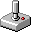

Interests
This is the stuff I get genuinely excited about: learning how things work, building things with my hands, and spending time outdoors doing hobbies that keep me active.
Computer Science
I love computer science because it lets me turn ideas into real projects, and there is always something new to learn, test, or build. I am also a member of RISC V, which fits perfectly with how much I enjoy low-level systems and hardware-minded computing.
Research & Experimental Science
I am also really into experimental science, and getting exposure to places like CERN, the Large Hadron Collider, and the UKAEA Fusion campus made that curiosity even stronger.
Building & Tinkering
I have a lot of fun tinkering, building, and messing with hardware or systems to see how they work and how I can improve them, especially when robotics is involved.

Sports
I love sports for the energy and focus they bring, especially padel, archery, and football.
History & Geopolitics
I am really into history and geopolitics, and I enjoy exploring that through HEMA, MUN, and wargames.
Gardening & Nature
Gardening and time in nature are the slower side of my interests, and I love that balance. I especially enjoy tulips and cherry trees.